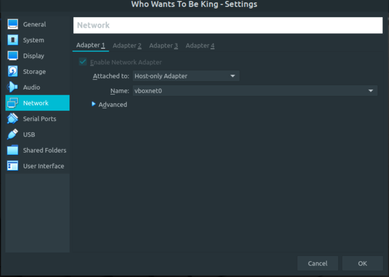
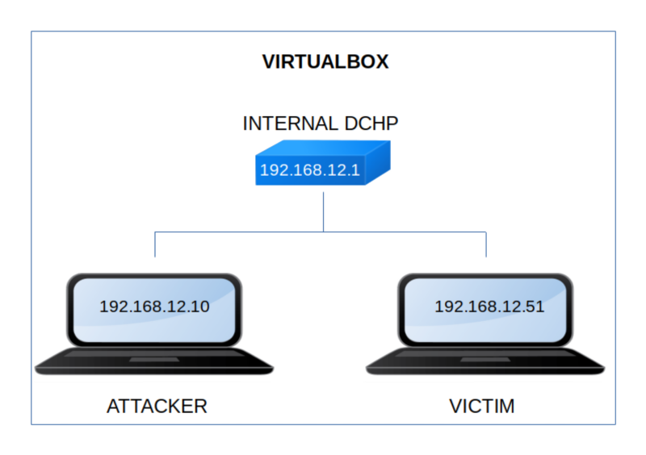

Who wants to be the king 1
▸ Who wants to be the king 1
▸ 1. Scan Network
▸ 2. Finding Services and Ports
▸ 3. Enumerate
▸ 3.1 Analyzing "skeylogger" file
▸ 4. Exploitation
▸ 4.1 Look for a posible username
▸ 4.2 Find some file with daenerys on the system
▸ 5. Privilege Escalation
▸ 5.1 Swith user to root (Flag)
Difficulty: Easy.
Flag: 1 flags.
Learning:
• Reconnaissance
Scan Network
Find services
• Enumerate
Show the strings of a file
Analizy a file
Decode base64
• Exploitation
Look for posible name on the internet
Find a file with a name
• Privilege Escalation
Switch user to root
• Download: https://drive.google.com/file/d/1A0Uqb-KUrXkN6Vol_pxBdbU2kdbRB0xN/view?usp=sharing
• Download (Mirror): https://download.vulnhub.com/whowantstobeking/whowantstobeking.ova
• Download (Torrent): https://download.vulnhub.com/whowantstobeking/whowantstobeking.ova.torrent
Install the machine on VirtualBox:
1. Download the file.
2. On Virtualbox choose File->Import Appliance.
3. Select the file “ova”.
4. Accept to import.


Watch your Machine IP.
$ ifconfig
Output:

Diagram
